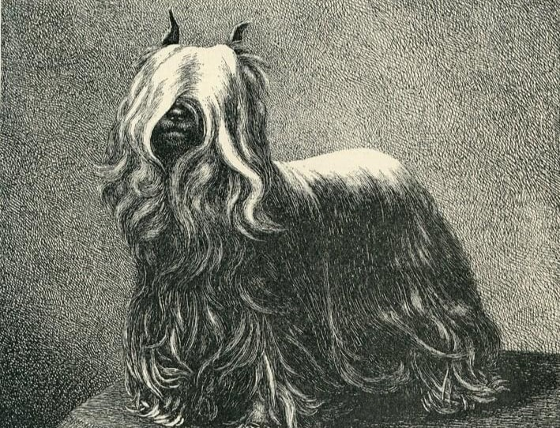
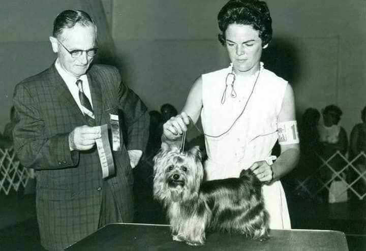
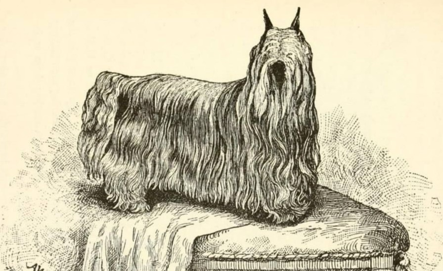

Início | Origem | Características | Cuidados
Yorkshire Terrier: os principais detalhes sobre a raça



O surgimento do yorkshire terrier está atrelado a fatos históricos ocorridos na Grã-Bretanha, mais precisamente na região que deu nome a raça no
nordeste da Inglaterra, antes do reconhecimento oficial do animal. No fim do século XI, os servos adquiriram a permissão de criarem cães, porém seu
tamanho não deveria ultrapassar o de um aro metálico de sete polegadas de diâmetro. Esta, acredita-se, pode ter sido a causa do início dos cruzamentos artificiais que
deram origem às raças posteriormente chamadas de terriers. Na época, o cão que passasse sem
problemas por esse aro era considerado pequeno o suficiente para não caçar, já que a classe servil, à qual pertenciam seus donos,
não tinha o direito à caça nos domínios senhoriais.
Até o século XVIII a maioria dos britânicos trabalhava na agricultura mas, com o advento da revolução industrial, muitas famílias deixaram a Escócia, levando consigo os
seus cães e instalando-se no Condado de Yorkshire, na Inglaterra, onde pequenas comunidades se desenvolveram ao redor das minas de carvão, dos moinhos têxteis e das indústrias de lã.
Mais diretamente ligado ao surgimento dos yorkshires, dita uma raça relativamente recente, estão os cruzamentos entre vários cães de pequeno porte já conhecidos na época.
Esses cães, assim como seus donos, concentraram-se nas proximidades dos centros de trabalho. De todas as teorias conhecidas, a mais aceita
fala de cruzamentos espontâneos entre black and tan, skye terrier, dandie dinmont e até mesmo maltês, raças tradicionalmente conhecidas como
caçadoras em tocas e que estavam presentes nas regiões de Manchester e Leeds, onde se desenhava um novo cenário de crescimento urbano.[4]
Nessas comunidades, com destaque para aquelas constituídas pelos operários de West Riding, estes cães passaram a ser vistos não apenas como animais de companhia em casa
e nas minas de carvão,mas como úteis rateiros na caça aos roedores que se escondiam por baixo dos terrenos das casas, e
nas competições de bar, nas quais estes caninos disputavam o posto de maior matador de ratos, sendo objeto de apostas,para posteriormente serem vendidos como valiosas peças.
Bem sucedido como companheiro e caçador, o cão chamou a atenção de criadores que, entusiasmados, iniciaram um novo processo seletivo na busca de um melhoramento
do padrão e das características de beleza e habilidade como rateiro. Estes processos iniciais, acredita-se, foram os que geraram o primeiro cão projetado
e produzido com sucesso, cujo comportamento deveria ser corajoso, o tamanho diminuto e a aparência bela.
Fisicamente estes cães acabaram por pesar entre 5 e 7 kg e tinham o pelo macio e rajado, como ainda pode ser visto na raça moderna.